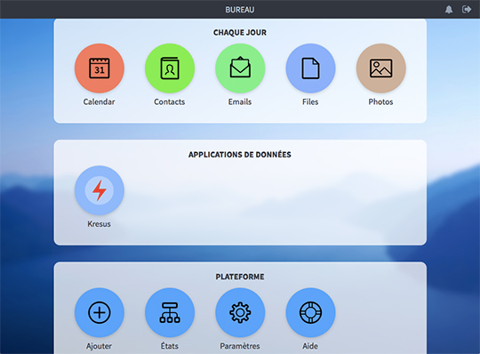

Donnees-a-voir
Hardware / software
Cozy Cloud
Cozy est actuellement un simple serveur personnel, mais il a vocation à devenir votre assistant personnel. Pilote de vos périphériques et de vos objets connectés, Cozy vous permettra de mieux vous organiser et d'automatiser vos tâches habituelles pour mieux gérer votre productivité et votre vie numérique. Fort des informations fournies par le croisement de vos données, vous êtes sûr de toujours prendre les bonnes décisions ! Et tout cela dans le plus total respect de votre vie privée, puisque vos données sont stockées dans un espace que vous contrôlez.

Linkurious
Linkurious permet de rechercher et visualiser des graphes de données à travers une simple interface web. Vous pouvez explorer les renseignements cachés parmi des connections complexes entre données comme des transactions financières, des logs de sécurités ou des réseaux sociaux.
L’ICIJ a utilisé Linkurio.us pour analyser les fameux Panama Papers.